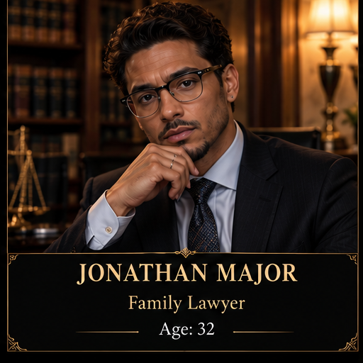
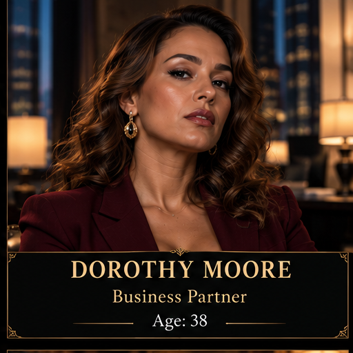
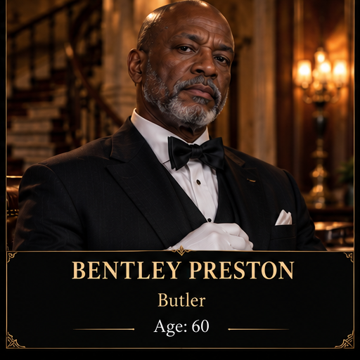
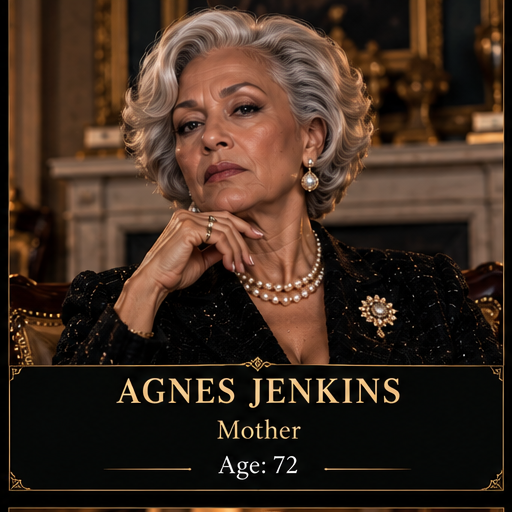

Jonathan - Family Lawyer
Age: 32
Relationship: Albert Jenkins' family lawyer.
Investigate Suspect
Jonathan handled Albert's legal and financial affairs.
Possible Motive: Albert discovered suspicious
financial activity.
Evidence: Financial records show suspicious
transactions involving Albert's accounts.

Dorothy Moore - Business Partner
Age: 38
Relationship: Albert Jenkins' business partner.
Investigate Suspect
Dorothy helped Albert build his company,
but Albert planned to remove her from
an important business deal.
Possible Motive: Revenge for being betrayed.
Evidence: A threatening letter from Dorothy
was discovered in Albert's bedroom.
Anna Whitlow - Personal Assistant
Age: 30
Relationship: Albert Jenkins' personal assistant.
Investigate Suspect
Anna worked for Albert for three years.
She recently discovered that he planned
to fire her and blame her for missing
company money and documents.
Possible Motive: Revenge and protecting
her reputation.
Evidence: Security footage shows Anna
entering Albert's private movie theater
before dinner. A bloody knife was also
discovered underneath her bed.

Bentley Preston - Butler
Age: 60
Relationship: Albert Jenkins' butler.
Investigate Suspect
Bentley worked for Albert's family for
over 10 years. Albert recently planned
to sell the mansion, leaving Bentley
without a job.
Possible Motive: Anger over losing his job.
Evidence: Bentley was seen near the
movie theater shortly before the
power outage.

Agnes Jenkins - Mother
Age: 72
Relationship: Albert Jenkins' mother.
Investigate Suspect
Agnes helped Albert build the family
business. Their relationship became worse
when Albert secretly sold family properties
without telling her.
Possible Motive: Anger over Albert
betraying the family and taking
control of their wealth.
Evidence: A handwritten warning letter
from Agnes was discovered inside
Albert's private movie theater.